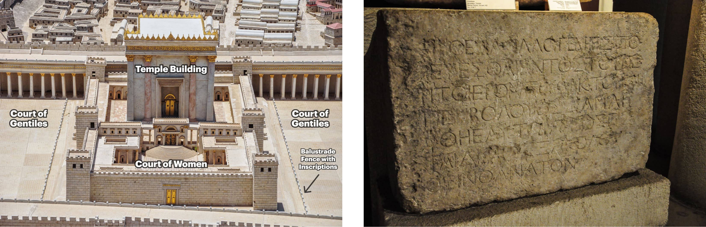

Sessão 19: Como Jesus Destruiu a InimizadeSession 19: How Jesus Destroyed Enmity
Principais Lições
- Para que Deus criasse a verdadeira família de Abraão, ele precisou destruir a hostilidade entre Israel e as nações e destronar os poderes.In order for God to create the true family of Abraham, he needed to destroy the hostility between Israel and the nations and dethrone the powers.
- O ponto da narrativa da Torá é expor a incapacidade da humanidade de ser parceira fiel da aliança de Deus (incluindo aqueles que Deus escolheu primeiro).The point of the Torah's narrative is to expose humanity's inability to be God's faithful covenant partners (including those God first chose).
- Segundo Paulo, os mandamentos na Torá são bons e justos, mas também criaram morte e hostilidade.According to Paul, the commands in the Torah are good and righteous, but they have also created death and hostility.
O Papel da Aliança: Tradução e Design Literário de Efésios 2:11-22
11 Portanto, lembrai-vos de que noutro tempo vós, gentios na carne, que sois chamados "incircuncisão" pelo que é chamado "circuncisão" (feita por mãos na carne), 12 naquele tempo estáveis sem Messias, estranhos à cidadania de Israel, e estrangeiros das alianças da promessa, não tendo esperança e sem Deus no mundo. 13 Mas agora, em Jesus Messias, vós, que antes estáveis longe, fostes aproximados pelo sangue do Messias. 14 Porque ele é a nossa paz, o que fez de ambos um, e derribou a parede de separação, a inimizade, 15 na sua carne, anulando a lei dos mandamentos em ordenanças, para criar em si mesmo os dois numa nova humanidade, fazendo a paz, 16 e reconciliar com Deus os dois num só corpo, pela cruz, tendo nele mesmo matado a inimizade. 11 Therefore remember, that at one time y'all, the gentiles in flesh, who are called "uncircumcised" by what is called "the circumcised" (what is performed by hands in the flesh), 12 that y'all were at that time, without Messiah, estranged from the citizenry of Israel, and foreigners of the covenants of the promise, having no hope and without God in the world. 13 But now, in Messiah Jesus, y'all who were at one time far off have become near by the blood of the Messiah. 14 For he himself is our peace, the one who made the two into one, and having destroyed the barrier of the wall, the enmity, 15 in his flesh, having set aside the Torah of commandments in decrees, in order that he might create in himself the two into one new humanity, making peace, 16 and that he might reconcile to God the two by means of one body, through the cross, having killed the enmity in himself.
17 E, vindo, anunciou paz vos que estáveis longe, e paz aos que estavam perto, 18 porque por meio dele ambos temos acesso ao Pai num único Espírito. 19 Assim que, já não sois estrangeiros e peregrinos, mas concidadãos dos santos, e da família de Deus, 20 edificados sobre o fundamento dos apóstolos e profetas, sendo o Messias Jesus a principal pedra da esquina, 21 no qual todo o edifício, bem ajustado, cresce para santuário sagrado no Senhor, 22 no qual também vós juntamente sois edificados para habitação de Deus no Espírito. 17 And as he came, he announced good news of peace to y'all who are far off, and peace to those near, 18 because through him we both, by means of one Spirit, have access to the Father. 19 Therefore then, y'all are no longer foreigners and immigrants, but y'all are fellow citizens of the holy ones and household members of God, 20 having been built upon the foundation of the apostles and prophets, the cornerstone being Messiah Jesus himself, 21 in whom the entire building is joined together, so that it can grow into a holy temple in the Lord, 22 in whom y'all too are being built together into a dwelling-building of God, in the Spirit.
Todo este parágrafo é desenhado como um fluxo simétrico de pensamento, onde cada seção contrasta com sua parceira. A e A': Costumavam ser estranhos baseados "na carne", mas agora são parte do novo templo messiânico no Senhor/no Espírito. B e B': Eram outrora estranhos, estrangeiros e sem Deus, mas agora são concidadãos e membros da família de Deus. C e C': Estavam outrora longe, mas agora foram aproximados. D, D' e D'': Os dois que estavam separados se tornaram um no Messias.This entire paragraph is designed as a symmetrical flow of thought, where each section contrasts with its partners. A and A': They used to be outsiders based "in the flesh," but now they are part of the messianic new temple in the Lord/in the Spirit. B and B': They were once estranged, foreigners, and without God, but now they are fellow citizens and members of God's family. C and C': They were once far off, but now they are brought near. D and D' and D'': The two that were separated have become one in the Messiah.
Fluxo de Pensamento em 2:11-22
Efésios 2:11-12 Realidade Passada: Os gentios não faziam parte da família da aliança de Israel nem estavam relacionados covalentemente ao criador. Efésios 2:13 Realidade Presente: Os gentios que antes estavam longe de Yahweh foram "aproximados" pela agência do "sangue do Messias". Pergunta-Chave: Como a morte (sangue) do Messias de Israel traz não-israelitas para a família da aliança de Israel? Efésios 2:14-16: O Messias fez do povo judeu e gentio uma única família unificada de Deus: derribando a parede de separação, a inimizade na sua carne; anulando a Torá consistindo de mandamentos em decretos. Efésios 2:17-22: Judeus e gentios são unidos pelo Messias como membros da família da casa de Deus (οἰκεῖοι), que constitui o novo edifício do templo (οἰκοδομή) antecipado pelas Escrituras de Israel (Ez 40-48; Jl 3:17-18; Zc 6:12-15). Realização no Novo Testamento desse templo como seguidores de Jesus (1 Cor 3:16-17, 6:19; Ef 2:19-22; 1 Pe 2:4-9). Nota: Paulo combina as metáforas do edifício do templo (apóstolos/profetas como fundação, crentes como tijolos, e Jesus como pedra angular) e de uma árvore ("cresce para um santuário"), que lembra o Salmo 1.Ephesians 2:11-12 Past Reality: Gentiles were not a part of the covenant family of Israel nor covenantally related to the creator. Ephesians 2:13 Present Reality: The Gentiles who were once far from Yahweh have been "brought near" by the agency of "the blood of the Messiah." Key Question: How does the death (blood) of Israel's Messiah bring non-Israelites into the covenant family of Israel? Ephesians 2:14-16: The Messiah has made Jewish and Gentile people one unified family of God by: Tearing down the dividing wall, the enmity in his flesh; Nullifying the Torah consisting of commands in decrees. Ephesians 2:17-22: Jews and Gentiles are united by the Messiah as family members of God's household (οἰκεῖοι), which constitutes the new temple building (οἰκοδομή) anticipated by Israel's Scriptures (Ezek. 40-48; Joel 3:17-18; Zech. 6:12-15). New Testament realization of that temple as Jesus' followers (1 Cor. 3:16-17, 6:19; Eph. 2:19-22; 1 Pet. 2:4-9). Note: Paul combines the metaphors of the temple building (apostles/prophets as the foundation, believers as bricks, and Jesus as the cornerstone) and a tree ("grows into a sanctuary"), which is reminiscent of Psalm 1.
Questões-Chave de Interpretação em 2:11-22
Há duas questões interpretativas que moldam nossa compreensão do que Paulo explica nesta passagem. 1. O que é a parede de separação, e como a morte de Jesus ("na sua carne") a derrubou? 2. O que significa que Jesus anulou a Torá, e qual é a relação da Torá com a parede de separação derrubada na linha anterior?There are two interpretive questions that shape our understanding of what Paul is explaining in this passage. 1. What is the dividing wall, and how did Jesus' death ("in his flesh") take it down? 2. What does it mean that Jesus nullified the Torah, and what is the Torah's relationship to the torn down dividing wall in the previous line?
Visão 1
A parede de separação refere-se à parede de barreira que ficava no átrio do templo de Jerusalém com um sinal. Prós da Visão 1: O contexto seguinte refere-se ao novo templo messiânico, onde judeus e gentios juntos são o novo templo e têm acesso ao Pai através do mesmo Espírito.The dividing wall refers to the barrier wall that stood in the court of the Jerusalem temple with a sign. Pros of View 1: The following context refers to the new messianic temple, where Jews and Gentiles together are the new temple and have access to the Father through the same Spirit.

Pergunta de Reflexão
Como a morte de Jesus destrói a inimizade entre judeus e gentios, e o que isso significa para a igreja hoje?How does Jesus' death destroy the enmity between Jews and Gentiles, and what does that mean for the church today?